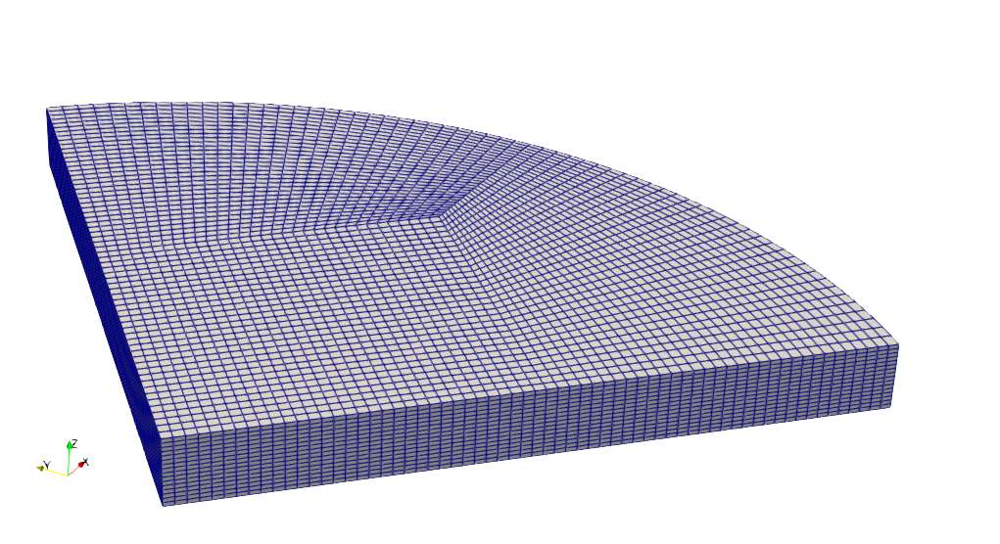
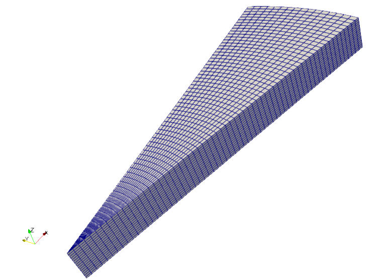
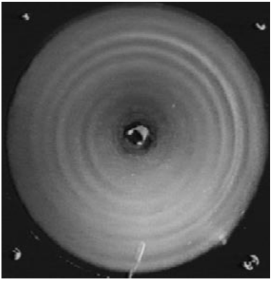
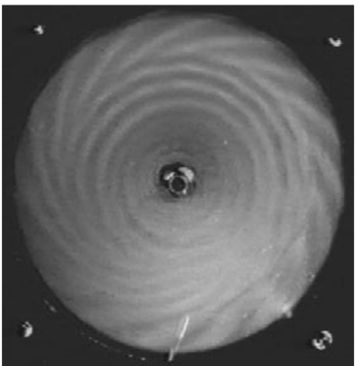
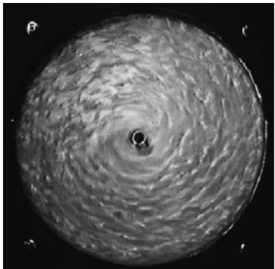
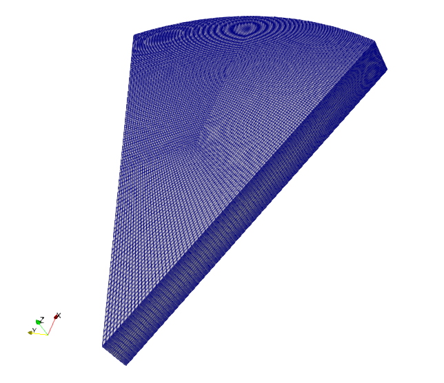
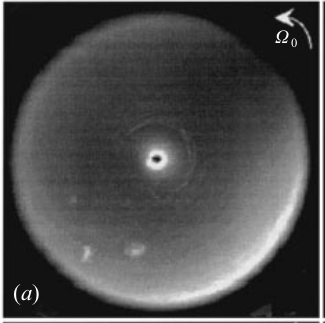
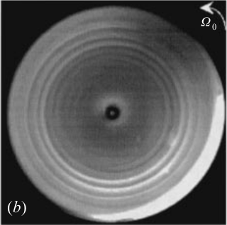
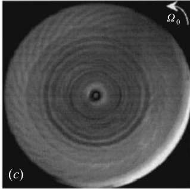
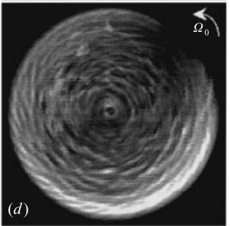

Aspect ratio (R/H) : 10
Files :
Steady case Unsteady caseMesh: three regions 32x32x16 each, giving 49152 cells in total.
ReH=700. Spin-up. Execution time : 6.5 h. dt=2e-3, nt=1e5, code efficiency =wall time/(nt*nx*ny*nz)=5e-6.
ReH=1000. Spin-up. Execution time : 3.3 h. dt=2e-3, nt=5e4, code efficiency =wall time/(nt*nx*ny*nz)=5e-6.
Mesh: three regions 64x64x32 each, giving 393216 cells in total.
ReH=600. Spin-up. Execution time : 12 h. dt=2e-3, nt=2.5e4, code efficiency =wall time/(nt*nx*ny*nz)=4.4e-6.

Mesh: r-th-z 64x16x16 each, giving 16384 cells in total.
ReH=600. Spin-up. Execution time : 2684 s. dt=2e-3, nt=5e4, code efficiency =wall time/(nt*nx*ny*nz)=3.3e-6.
H=1, R=8.75, H/R=0.1142, shroud fixed. Re=225, 273, 805.
   Re=803, domain R - 2pi/8 - H, mesh 230400 cells, wall time 31282 sec, nt = 16667, dt = 12e-3, CFL = 1.71, code efficiency=wall time/cells/nt=8.15e-06.
Re=803, domain R - 2pi - H, mesh r-th-z = 150-40 cells, m=0,8,16,24,32,40,48,56, wall time 5073 sec, nt = 40000, dt = 5e-3, code efficiency=wall time/nx/nz/nt=2.11375e-05.
mpirun -n 8 --use-hwthread-cpus rotstmpi -mode 200 -nx 150 -nz 40 -nF 8 -m 8 -gridType 2 -lx 8.75 -lz 1 -nt 40000 -dt 5e-3 -re 805 -wn 1e-6 -reg 10 -restart 0
1152 p7 elements , 1.67214E+04 sec calculation time, mpi 4
CaseH=1, R=20.9, R/H=20.9, shroud fixed. Re=40, 120, 180, 300.
   